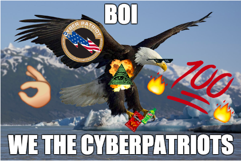

Father Moreau Day 2020

Welcome to CyberPatriot's FMD Workshop!
Today, you'll be trying to solve all sorts of problems related to the cybersecurity world. Although most puzzles in this workshop are revolved around cryptography and how computers obscure messages in various ways, the CyberPatriot team has created their own spins on these problems to give you a complete puzzle-solving experience! Click one of the two categories above to begin your journey. We wish you the best of luck!
Access the FMD documentation packet here.
Submit your puzzle answers here.
